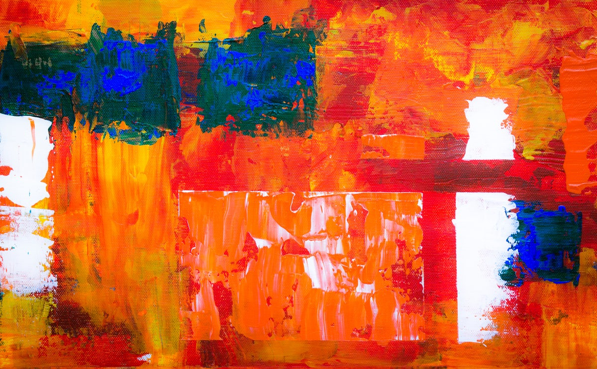

- TIOLLABS
- TIOLLABS TRY
- INVESTMENT
TIOLLABS TRY
티올랩스는 현재 진행중인 사업은 미대생들의 작품들을 소개하고 판매하는 플랫폼입니다.
미대생들의 작품들은 여러분야가 있습니다. 공예(도자,금속,목조),회화,패션,조형,사진 등이 있습니다.

다양한 분야의 작품들을
감상하고 구매할 수 있을것입니다.
현재 서울대학교,홍익대학교 학생들을 포함한 3만명 이상의 미대생들이 활동하고 있으며 세상의 하나밖에 없는 작품들을
가져보세요.